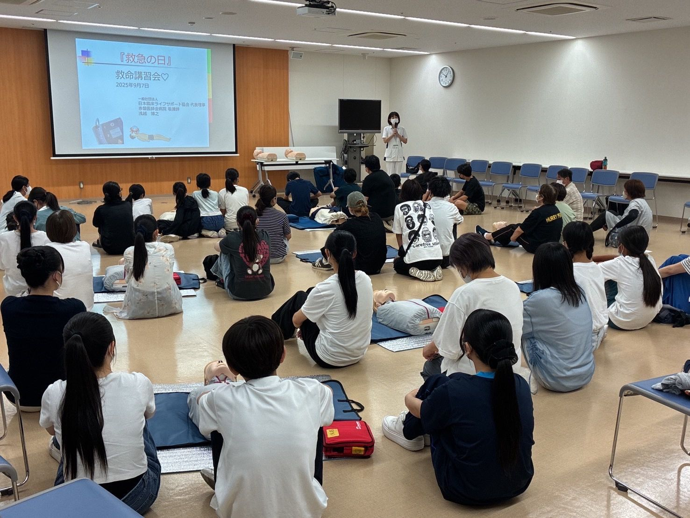

救急の日 救命講習会（岡山西川会場）
胸骨圧迫・AED・小児の窒息対応を学ぶ無料講習。岡山大学病院 小児救急科 共催。
会場：西川アイプラザ 会議室2（岡山市）
一般の方向けの救命講習会の日程と、団体向けの出張講習のご案内です。
現在、受付中の講習会はありません。
新しい日程は、このページとLINE公式アカウント・Instagramでお知らせします。
学校・企業・地域団体・スポーツチームなどへの出張講習も承ります。人数や会場に合わせてご相談ください。
胸骨圧迫とAEDの使い方を中心に、「その場で動ける」ための基本を短時間で身につけるコースです。
普通救命講習Ⅰと同等のカリキュラム・時間で行うコース。日本防災士機構より、防災士資格取得のための救命講習として認められています。
メールまたはLINEで、ご希望の日時・人数・会場・対象の方（年齢や職種）をお知らせください。
目的や時間に合わせて、プランと講習内容をご提案します。資器材は当協会でご用意します。
医療の専門職が伺い、実技中心で指導します。受講後の修了証の発行もご相談ください。

胸骨圧迫・AED・小児の窒息対応を学ぶ無料講習。岡山大学病院 小児救急科 共催。
会場：西川アイプラザ 会議室2（岡山市）
胸骨圧迫・AED・小児の窒息対応を学ぶ無料講習。受講修了証を交付。
会場：赤磐医師会病院 4階会議室（岡山県赤磐市下市187-1）
心肺蘇生法・AED・窒息対応を演習形式で学びました。
会場：赤磐医師会病院 4階会議室（岡山県赤磐市下市187-1）
心肺蘇生法とAEDの使い方を実践形式で学びました。
会場：シゲトーアリーナ岡山（岡山市北区いずみ町2-1-3）